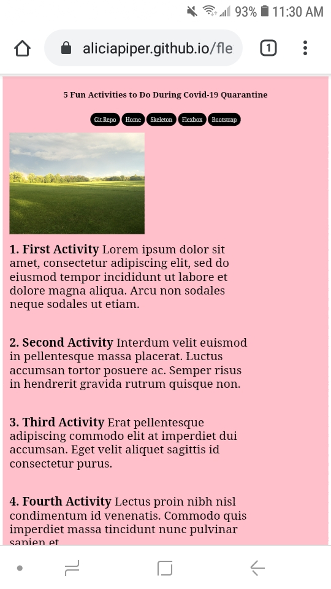

Git Repo
Here is my Git Repo.
Media Queries Portfolio Home Page
Media Queries are important in responsive web design because they can change the way
that users see a web page on different size of devices. They are essential to responsive
web design, specifically for mobile devices. Without Media Queries, on small devices such
as smartphones or tablets, pictures and columns will become squished and it will be harder,
if not impossible some times to read them.
Resume Using Skeleton
Personally, I liked using Skeleton a lot more than just the media queries. Since the responsiveness
is already built into it, it is a lot easier. Its strengths include the simpleness of the grid system
-- how it is set up to use the 12 columns. Its weaknesses include that I felt it was slightly clunky
with trying to keep all the divs straight.
Flexbox Website
Flexbox is designed very well to help create a grid by aligning items. I did not like using it as much
as Skeleton as it was hard to set up different columns within each row. Meaning that in Skeleton, you could
just say that in this row, I want 3 columns and in the next row I want 5 columns. With FlexBox, I found that
harder to do.

Bootstrap Website
I loved using Bootstrap! It is definitely my favorite grid system from this semester. It has a very good user
interface, meaning that it was easy for the user. The one weakness (although this is more on my part) is that I
struggled slightly in the begining because I didn't know everything Bootstrap had to offer (meaning all of the
different CSS classes it offered). As mentioned before, I really enjoyed using Bootstrap and feel like it is easier
to use when compared to media queries.